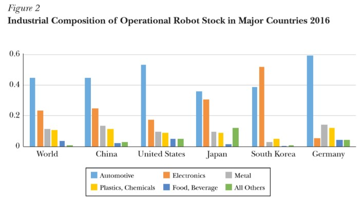
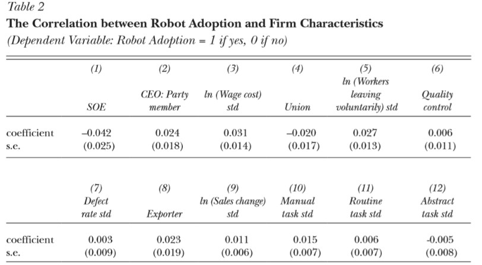

The Rise of Robots in China (1)
This article examines the rise of robot use in China in several different industries, primarily the manufacturing, automotive and electronics industries. Cheng et al attempt to explain the increase in the use of robots in Chinese manufactories through a supply and demand line of reasoning. Additionally, Cheng et al try to answer if increases in labour costs and other market factors, as well as government policies in favour of robotics are responsible for China’s rapid rise in robot adoption.
Method
A large amount of the data for this project is drawn from the CEES (China Employer-Employee Survey) which is said to have accurate information about the Chinese manufacturing sector. The paper examines correlations between a firm’s likelihood to adopt robots as a form of labour and a series of variables: Government connections i.e. CEO being a member of the communist party; market factors that might influence robot adoption i.e. labour costs, quality concerns, expanding production; and task specific robot adoption i.e. robots replace jobs which people no longer want to do. Cheng et al also investigate whether the factors that affect robot adoption are common to the factors that affect general machine adoption.
Initial Observations
In a 16-year period between 2000 and 2016 China’s global market share in terms of annual sales of robots grew from 0.4% of the global market to 30%. As seen in figure 2 foremost industries where adoption of robotics is prevalent are the automotive and electronics industry. China is the largest producer of automobile units worldwide since 2008 and dominates the global electronics market it follows that the growth in the robotics sector will also be large. The researchers also observed a significant rise in robot production as well as use between 2005 and 2015 with the number of robotics firms doubling each year between 2013 and 2015.

Cheng et al observed a decrease of growth in labour force which had peaked in 2003 but had then grown negative in 2015. A further observation made was that the manufacturing sector was suffering from increasing labour costs due to an increase of college enrolments between 1999 and 2009, this means a decrease in the unskilled labour force. China's manufacturing sector has had difficulties attracting workers with college education as they can likely earn more elsewhere. Both factors were observed to have led to economic and political pressure to increase the use of robots within industry, specifically the manufacturing sector.
Political pressure took the form of the Chinese government subsidising the use and production of industrial robots; however, the method of subsidisation is not necessarily the most efficient. At a local level, governments have created investment capital funds and allocated an unspecified amount of resources to robot production, however the extent of this investment varies substantially region to region. The government also set targets such as the ‘made in China: 2025’ project to triple the density in the robot sector by 2025 as well as raise the market share of robot production to 45%. A concern of Cheng et al was if robots were going to replace workers would there be an unemployment issue? Findings in China show that robots replace frontline workers in tasks that are heavy and dirty and manual intensive and that the workers they replace simply undergo a training program ad are transferred to a more technical position. 75% of the firms that implemented a plan to replace workers with robots have maintained their level of workers or increased them.
Empirical Findings
To create a sample of firms in the manufacturing industry, Cheng et al used the National economic census as a sampling frame where 20 districts are randomly sampled in each province, 50 firms are sampled in each district and then the first 36 eligible firms are surveyed. The CEES data proved to be highly correlated with the results from the IFR (international federation of robotics) which proved useful as a validity check for the CEES data. The firms were handed an augmented CEES survey that followed two lines of questioning: whether a firm used robots in their processes and how much robots cost and if the government subsidized their purchase.
Cheng et al used a series of cross-sectional regressions to describe the patterns between robot adoption and the variables in the CEES survey. Figure 3A&B handles firm size and capital-labour ratio as independent variables.
Findings for 3 A&B:
- Figure A shows that a marginal increase of one standard deviation in log(#workers) gives rise to an increase in the probability of robot adoption by 8.3%
- Figure B shows that an increase in the log(capital/labour) by one standard deviation leads to an increase in the probability of robot adoption by 3.7%
Table 2 effectively measures the correlation of the CEES variables with robot adoption, controlling for province and industry essentially comparing similar sized firms with roughly the same capital-labour ratio. Table 2 shows:

- 35% of the firms in the sample have a CEO in the CP and according to table 2 this is associated with a 2.5% increase in probable robot adoption
- Cheng et al earlier hypothesised rising labour costs as an increase in robot adoption this is measure in 3 ways: total wage bill, existence of a labour union, worker turnover rate
- An increase by one standard deviation in log wage is associated with an increase in the probability of robot adoption by 3%
- The existence of a labour union within a firm was not conclusive with an increase in the probability of robot adoption
Conclusion
This paper made an attempt towards understanding the cause and effect of rising robot use in China and its current effect on the labour market. Cheng et al attributes the rise of robots to a decline in the growth of the working age population and an increase in wage as well as the Chinese government's policies which are likely to positively affect robot adoption at an aggregate level.
Photo from: Unsplash
Original Article: Cheng, Hong, Ruixue Jia, Dandan Li, and Hongbin Li (2019): “The Rise of Robots in China”, Journal of Economic Perspectives, 33(2), pp. 71-88.